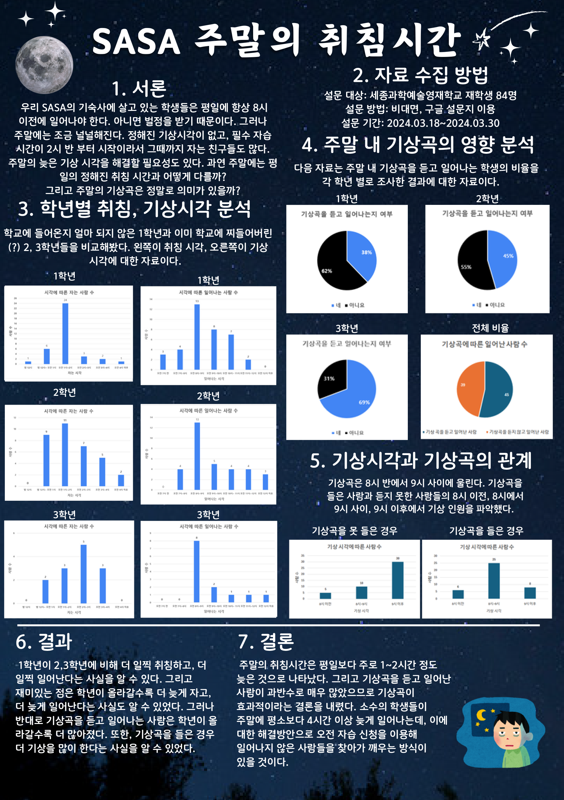
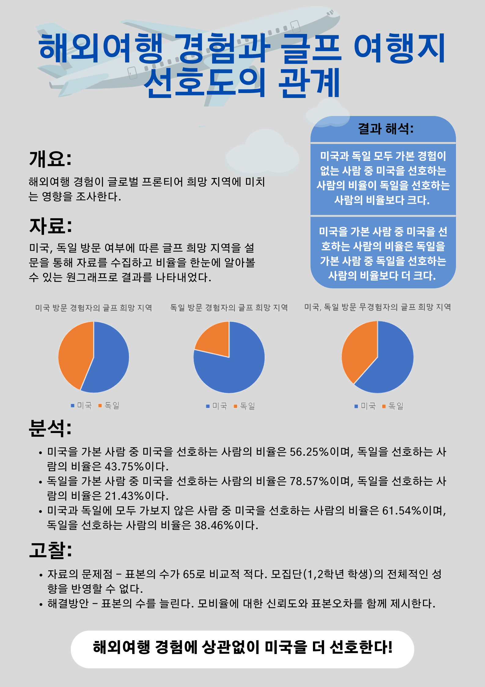

통계포스터 학생작품
2학년 1반
결혼율과 출산율이 떨어지는 이유는?

세과영 영재들의 인스타그램 사용 조사
수면 시간과 행복 지수의 상관관계

프로그래머가 연애를 못하는 이유?
세과영 학생들의 연애 횟수와 관련 있는 통계량 찾기
2학년 2반
2024 고등학생 스마트폰 사용 실태조사
세과영 학생들의 자판기 사용 실태와 보완할 점은 무엇인가?

고등학생 사진 촬영 패턴과 MBTI 성격의 상관관계 분석

SASA의 슬기로운 음악생활
SASA 주말의 취침시간

2학년 3반
SASA의 스포츠
MBTI는 과연 올바른 성격 유형 검사 도구일까?

SASA 학생들의 스크린 타임 현황 분석
SASA인의 주말 외출 조사!

SASA 학생들의 키, 발사이즈, 수면시간 현황과 상관관계

2학년 4반
1일1제, 너는 뭐야?

수학 1일1제 제출 정도에 관여한 요인

신발 사이즈와 BMI의 관계

등교 시 스프레드 시트 찍는 시간과 벌점 상관관계
인스타, 유튜브, 트위터 Let’s GO!

2학년 5반
MBTI에 따른 학생들의 학교 생활
고등학생들의 체력에 영향을 미치는 요인 분석

SASA 학생들은 정치를 어떻게 생각할까?
체육 시간, 이대로 충분한가요?

학교별 학생들의 카페인 섭취량 분석

2학년 6반
청소년의 눈 건강 실태 조사
통계로 보는 2024 사사의 3월
해외여행 경험과 글프 여행지 선호도의 관계

MBTI, 학점, 벌점, 따방횟수의 상관관계 분석
계획적인 삶과 벌점의 상관관계